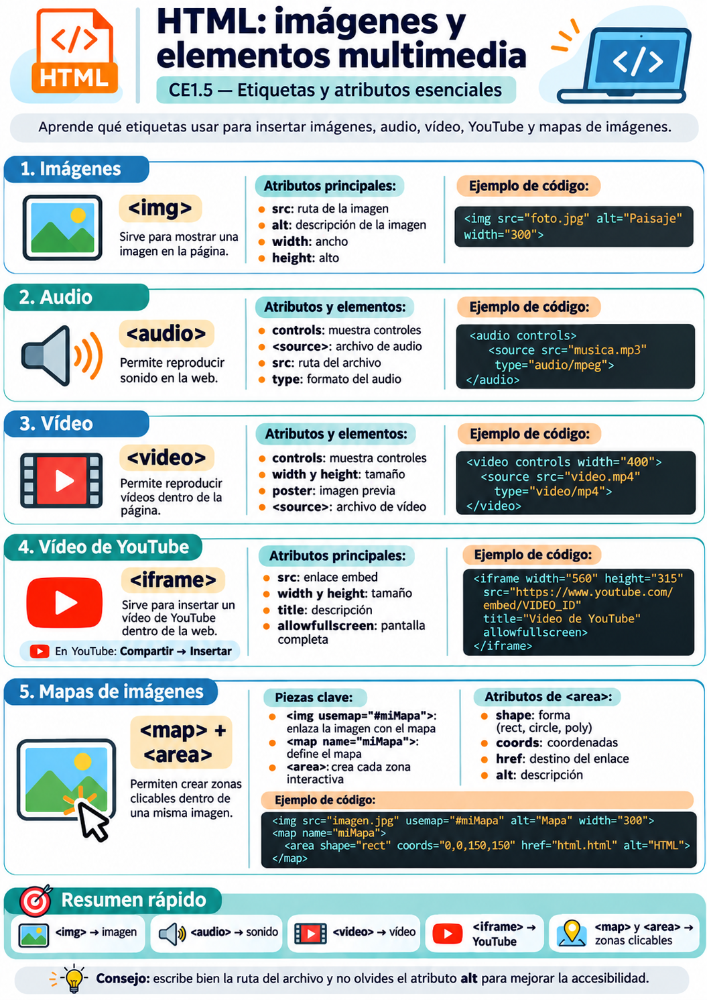

1. Imágenes
Rutas, img, alt, formatos, pies de foto y optimización.
UF1302 · UD2 · MF0950_2
Un tema importante merece una ruta clara. Estudia cada bloque por separado y vuelve al índice cuando lo necesites.

Cómo trabajar este tema
No necesitas leer una página interminable. Sigue el orden propuesto y prueba cada fragmento en tu propio proyecto.
Rutas, img, alt, formatos, pies de foto y optimización.
Zonas clicables con map y area, coordenadas y accesibilidad.
Reproductores nativos, subtítulos, formatos y contenido de YouTube.
Abrir multimediaUso responsable de iframe, object y documentos PDF.
El contenido original se conserva para consultar ejemplos, laboratorios y actividades mientras terminas de trabajar las nuevas lecciones.